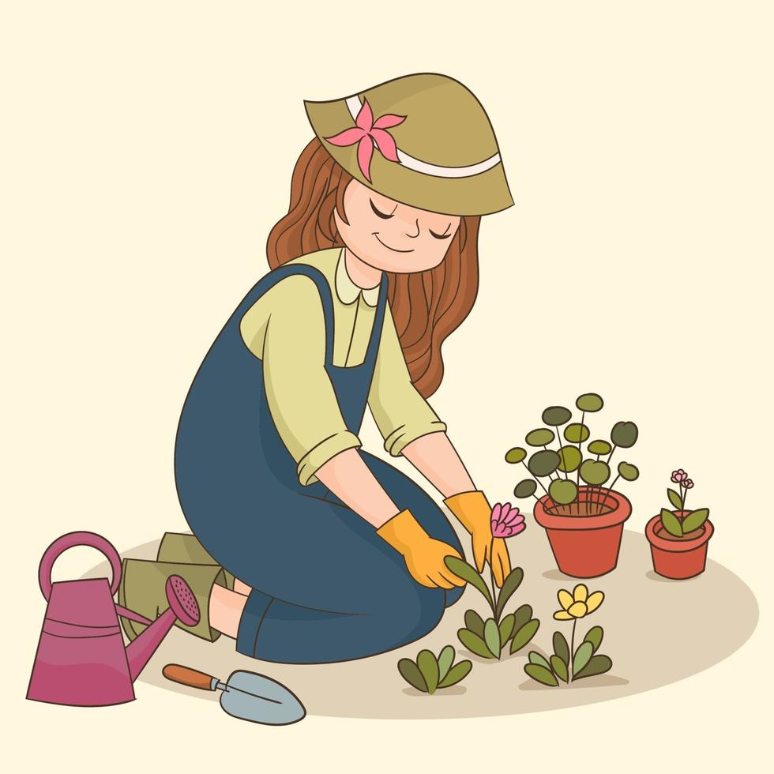

Gardens should be located in designated areas to maintain a harmonious campus environment and protect other spaces.

Opt for native plants that are adapted to the local environment, reducing maintenance while preserving biodiversity.
Watering should be done sustainably, using efficient methods to conserve water and promote plant health.